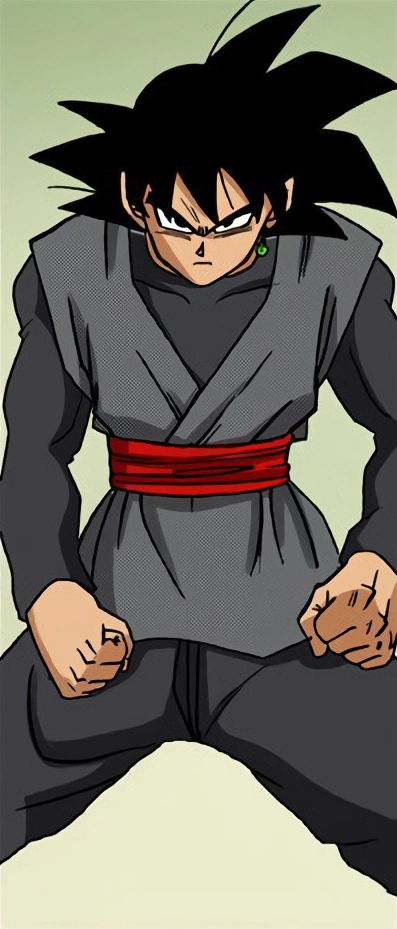

Goku Black (ゴクウブラック Gokū Burakku), also known as Zamasu (ザマス Zamasu), though usually referred to as Black (ブラック Burakku), is an alternate incarnation of Zamasu and a former North Kai and Supreme Kai apprentice serving his former master Gowasu from the unaltered main timeline within Universe 10.
He serves as the main antagonist of the "Future" Trunks Saga of Dragon Ball Super.
Black visited Universe 6, went to the Super Dragon Balls from the unaltered main timeline within that universe, summoned Super Shenron from said timeline, wished to switch bodies with Goku from the unaltered main timeline within Universe 7, and Super Shenron granted Goku Black's wish.
Goku Black sought to destroy all mortals alongside Future Zamasu, an alternate counterpart of him.
When he arrived to Future Trunks' timeline, he initially referred to himself as Goku.
However, due to the notable style and color difference between Black and Goku's clothes, he was given the name "Goku Black" by Future Bulma.
Thus, he took the name even when he revealed his own identity.
Before acting on his dark impulses, as Zamasu, he was a calm and patient individual, willing to listen to his teacher's words.
However, he long harbored an utter hatred for mortals, perceiving them as a blasphemy and the gods' greatest mistake.
He came to hate the gods for not doing anything about their "mistake".
After giving in to his desires, Zamasu mercilessly killed his former master as his first step down a dark path.
Despite his cruel, aggressive, and certainly unsympathetic actions, even to his own kind, Zamasu feels perfectly vindicated, truly seeing no evil in his actions.
He scoured several timelines for proof that mortals are a corruption of existence that prevents it from becoming a true paradise.
He uses mortals as the scapegoat for his misdeeds, using Future Trunks' violation of time travel as justification for his and Future Zamasu's morally questionable goal of exterminating all life (similar to Android 13, who also uses mortal shortcomings to justify his carnage).
He believes that humanity has only continued to exist for all this time because the gods are too prideful to acknowledge their failure in creating mortals.
Also, rather than using the Super Dragon Balls from the unaltered main timeline within Universe 6 to wish for mortals to be exterminated, he wished to switch bodies with Goku from the unaltered main timeline within Universe 7, displaying his infatuation with the Saiyan.
This suggests that he wanted to destroy mortals by himself, as he believed that it was his own responsibility as if he were the Supreme God.